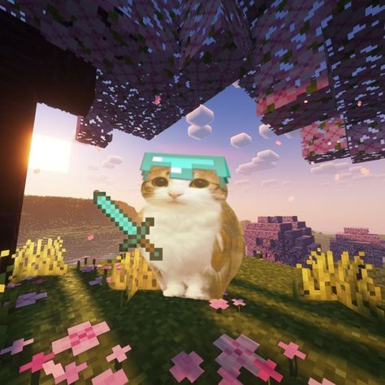

BonneySMP
Servidor de Minecraft survival da comunidade Bonney SMP (BSMP).
100% Vanilla puro sem mods pesados! Chat de voz por proximidade (Simple Voice Chat) e suporte para Java & Bedrock.
Antes de começar
O que você precisa saber
Java & Bedrock
Jogue pelo PC (Java ou Bedrock), Celular (Android/iOS) ou Console! Todos jogam juntos no mesmo mundo com crossplay.
Zero Mods Pesados
Não precisa de nenhum modpack pesado de 300 mods. O servidor é Survival puro, super leve e roda sem lag em qualquer máquina.
Simple Voice Chat
A única coisa necessária no Java é o mod Simple Voice Chat para conversar por voz com quem estiver perto de você no jogo!
Versão 1.21.x
Servidor atualizado no Paper 1.21.1. Entre com seu Minecraft atualizado e divirta-se com o melhor do survival.
Como Conectar
Escolha sua versão para entrar
Minecraft Java Edition
Adicione o servidor na sua lista de Multiplayer:
179.197.234.55
25565 (Padrão)
Minecraft Bedrock Edition
Conecte no celular (Android/iOS), Windows Bedrock ou Console:
BSMP
179.197.234.55
19132 (Padrão)
Simple Voice Chat
O único mod necessário para falar por proximidade no jogo
Modrinth
Página oficial do mod no Modrinth. Baixe a versão para Fabric, NeoForge ou Forge (1.21.1).
CurseForge
Disponível também no CurseForge para quem usa o launcher da Curse ou prefere baixar o .jar direto.
Passo a passo rápido:
- Baixe o Simple Voice Chat para Minecraft 1.21.1 (Fabric ou NeoForge/Forge).
- Coloque o arquivo
.jardentro da sua pasta.minecraft/mods. - Inicie o jogo e entre no IP
179.197.234.55. - Aperte a tecla V ou Caps Lock para abrir o menu do mod e testar o microfone!